Порядок работы такой:
Для взлома нам необходимо две виртуальные машины: первая Metasploitable 2 и вторая виртуальная машина это Kali Linux.
Для начала загрузим из интернета программу создания виртуальных машин VirtualBox.
Зайдите на страницу https://download.virtualbox.org/virtualbox/7.2.10/ найдите файл файл VirtualBox-7.2.10-174163-Win.exe - это установочный файл VirtualBox для машины с ОС Windows. Загрузите этот файл. Или прямая ссылка для загрузки https://download.virtualbox.org/virtualbox/7.2.10/VirtualBox-7.2.10-174163-Win.exe. Загрузили, устанавливаем на свою ОС Windows. Для данной статьи я взял версию VirtualBox 7.2.10 но я рекомендую загружать самую последнюю версию VirtualBox по ссылке https://download.virtualbox.org/virtualbox/ и также брать последнюю версию ВМ Kali Linux - это нужно для того, что далее мы будем загружать из интернета виртуальную машину Kali Linux - то есть файлы с ОС Kali Linux предназначенные для запуска в среде VirtualBox - и что бы последняя версия Kali Linux которую вы возьмете с интернета без ошибок работала на последней версии VirtualBox. Обясню- к примеру для данной статьи, я взял последнюю версию на текущий момент Kali Linux 2026.1 это файл с архивом ВМ kali-linux-2026.1-virtualbox-amd64.7z - архив с ВМ Kali Linux и ВМ с ошибками работала на версии VirtualBox 7.1.10 и уже есть VirtualBox 7.2.10, но я решил воспользоваться версией VirtualBox 7.1.10. Ошибки в работе проявлялись в том что гостевые дополнения не работали - наблюдалось неправильное разрешение рабочего стола Kali 2026.1 в VirtualBox 7.1.10, так же не работало копирование из виртуальной машины на хост, и из хоста в виртуальную машину - "копи-пасте" текста не работало. После замены VirtualBox 7.1.10 на последнюю версию VirtualBox 7.2.10 ВМ Kali 2026.1 начала работать без ошибок - гостевые дополнения работали правильно. Таким образом вывод, и я рекомендую - если вы загружаете последнюю версию ВМ Kali Linux - обязательно загрузите последнюю версию VirtualBox, иначе возможна неправильная работа виртуальной машины.
Здесь необходимо добавить, что связка версий взятая для этой статьи - ВМ Kali 2026.1 и VirtualBox 7.2.10 - работает хорошо и вы можете ее использовать. Но, в случае если вы будете использовать последнюю версию ВМ Kali (следующую за Kali 2026.1) то используйте так же последнюю версию VirtualBox (следующую версию за VirtualBox 7.2.10).
Далее мы будем загржать из интернета Metasploitable 2 и подключать Metasploitable 2 в VirtualBox. Для этого зайдите на сайт: https://www.vulnhub.com/entry/metasploitable-2,29/ и найдите ссылку в разделе страницы Download, ссылка выглядит так:
https://download.vulnhub.com/metasploitable/metasploitable-linux-2.0.0.zip
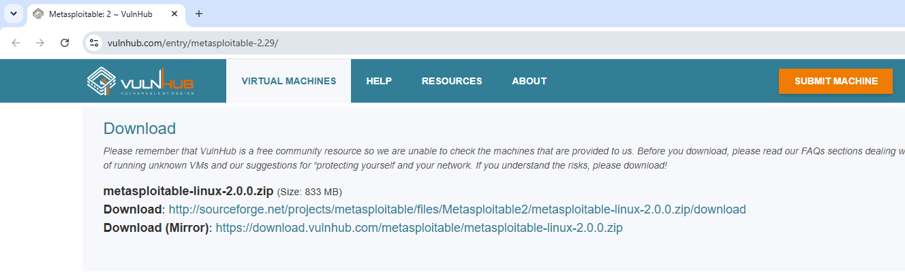
То есть мы должны загрузить этот файл ахрива zip с сайта. После загрузки распакуем архив в удобное место.
Предположим, после распаковки архива у нас есть путь к файлам:
C:\PENTEST_ISO\metasploitable-linux-2.0.0\Metasploitable2-Linux\
И, соответственно, сама папка с распакованными файлами в проводнике выглядит так:

Metasploitable.vmdk — это виртуальный диск машины Metasploitable, то есть готовая уязвимая CTF/учебная система для практики пентеста. Именно этот файл мы будем подключать в VirtualBox для создания виртуальной машины.
Следующий шаг- запускаем VirtualBox и для начала создания виртуальной машины нажимаем кнопку "Создать".
Далее появиться окошно с названием "Создание виртуальной машины" и в этом окошке заполните информацию как на следующих трех скриншотах - а именно:
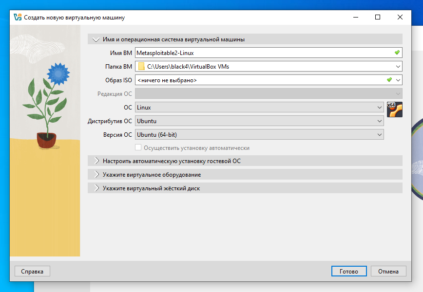
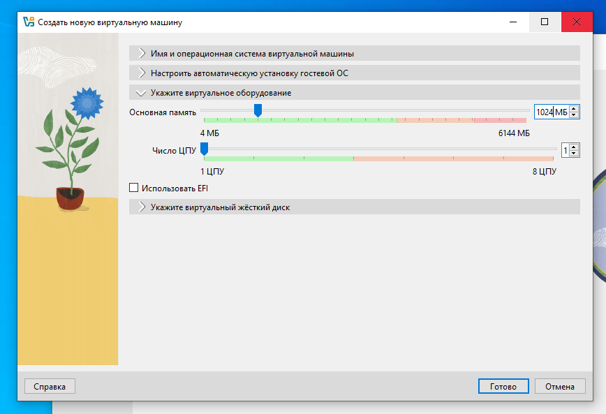
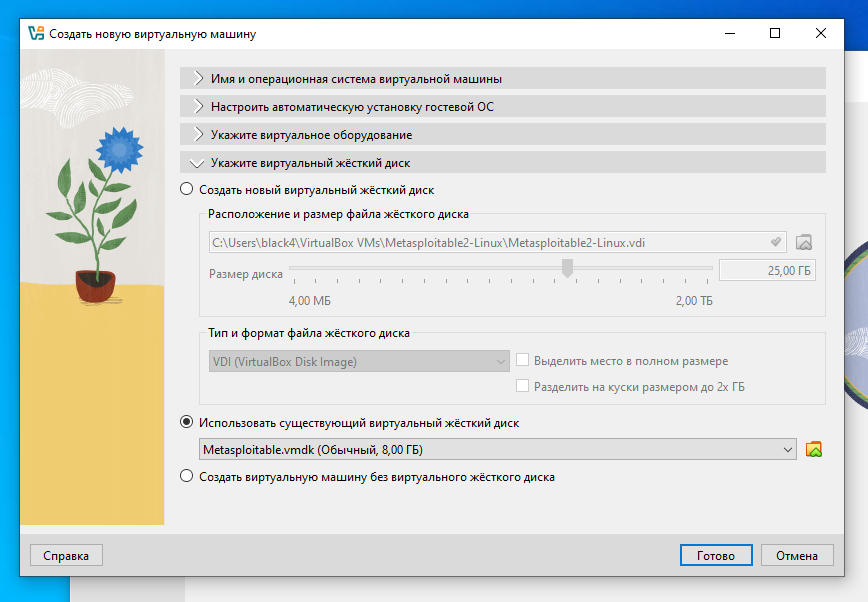
Далее в этом же окне после указания всех настроек нажимаем кнопку "Готово". В результате у нас будет созданная виртуальная машина как на скриншоте ниже:

Далее мы будем загружать виртуальную машину Kali Linux 2026.1. Для этого перейдите по ссылке: https://old.kali.org/base-images/kali-2026.1/, на странице найдите файл kali-linux-2026.1-virtualbox-amd64.7z и загрузите его. Или прямая ссылка для загрузки zip архива ВМ Kali Linux 2026.1 такая https://old.kali.org/base-images/kali-2026.1/kali-linux-2026.1-virtualbox-amd64.7z После загрузки, распаковываем полученный файл kali-linux-2026.1-virtualbox-amd64.7z в удобное место. К примеру я распаковал файлы архива сюда:
C:\PENTEST_ISO\kali-linux-2026.1-virtualbox-amd64\
Вот как выглядит папка распакованного архива:
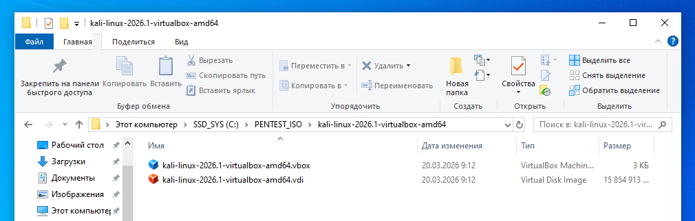
Что бы нашу ВМ Kali добавить в VirtualBox, запустите VirtualBox и нажмите Ctr+A или выберите пункт меню как на скриншоте:
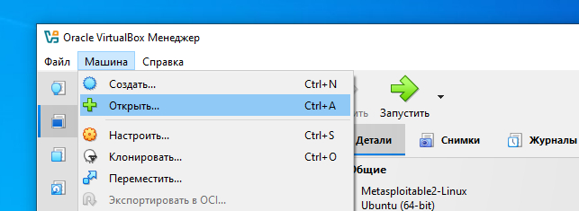
В открывшемся окне предлагается выбрать файл ВМ, необходимо указать файл kali-linux-2026.1-virtualbox-amd64.vbox и нажать кнопку "Открыть" (как на скриншоте ниже).
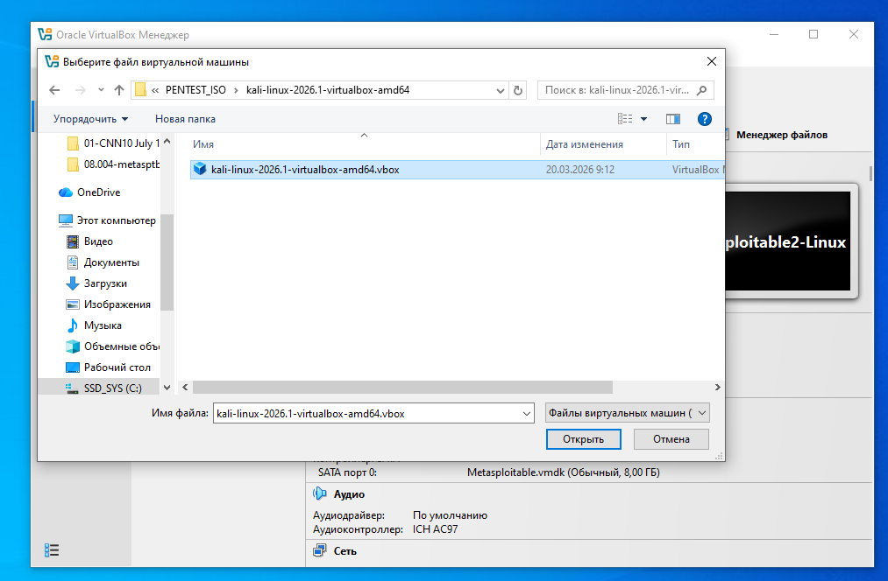
Теперь ВМ Kali добавилась в список, и в итоге у нас есть две виртуальные машины, необходимые для наших тестов.
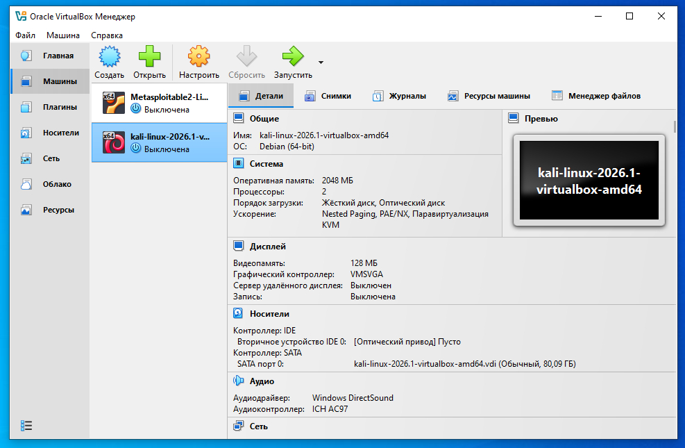
Следующий шаг - в среде VirtualBox создать сеть - общую сеть для наших двух виртуальных машин. Это необходимо, так как мы будем делать пентест с ВМ Kali на ВМ Metasploitable 2 и поэтому обе машины должны находиться в одной сети.
Начинаем создавать сеть в VirtualBox, для этого, в общих для всех машин настроках в VirtualBox (то есть не настроки конкретно для какой то ВМ а общие), заходим в меню "Сеть2, выбираем закладку "Сети NAT" и прямо над закладкой "Сети NAT" есть кнопка (изображение зеленого цвета знак плюс) "Создать" и жмем эту кнопку "Создать" как на скриншоте ниже. После того как была нажата кнопка "Создать" в данном окне появляется сеть с названием NatNetwork - для удобства использования переименуем эту сеть в MyPentestNetwork.
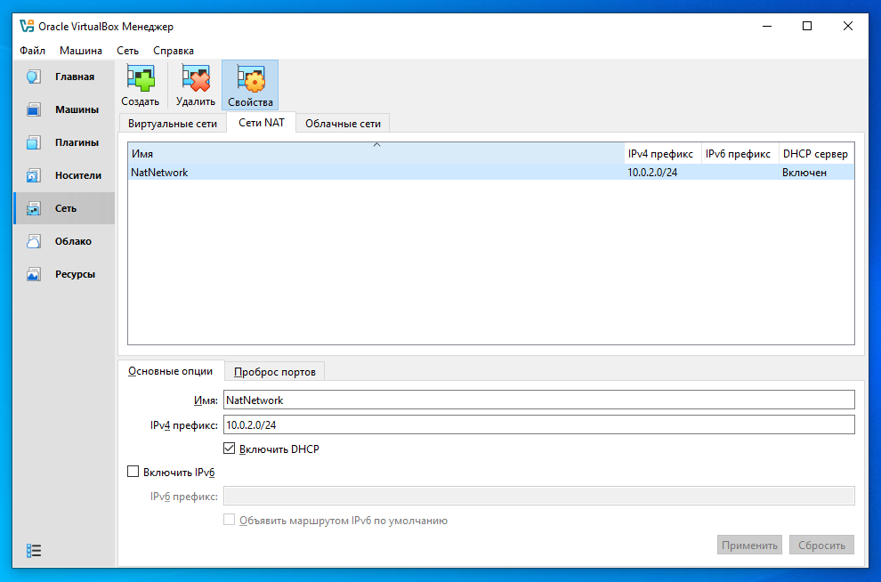
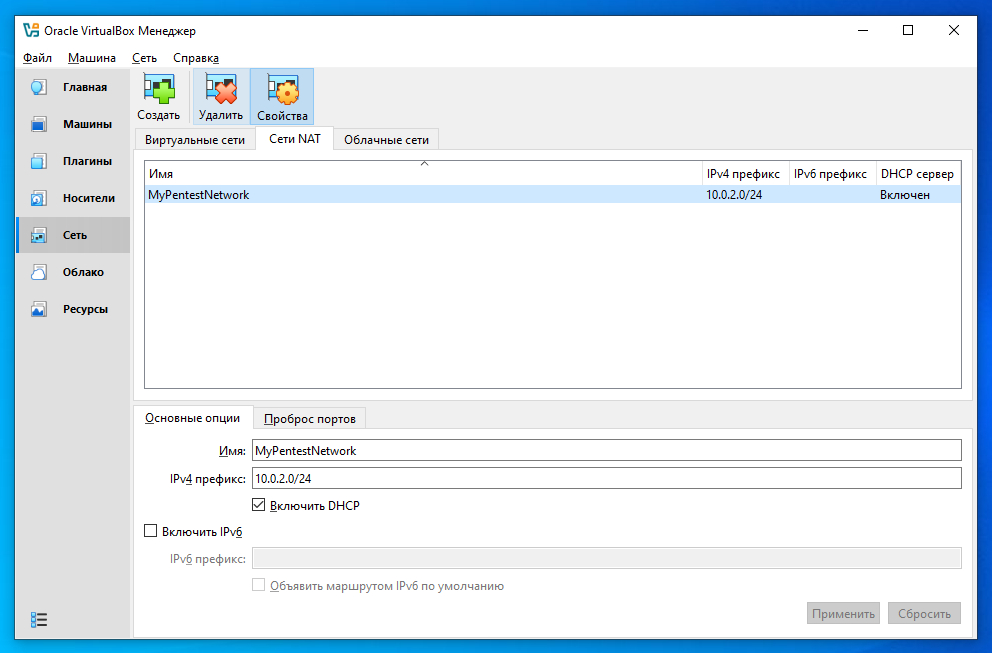
Все - сеть мы создали.
Следующий шаг - в VirtualBox в каждой ВМ указать что бы эта виртуальная машина использовала нашу сеть MyPentestNetwork.
Для этого из главного меню Сеть возвращаемся в главное меню Машины (список наших ВМ), выбираем ВМ Metasploitable 2 и жмем кнопку "Настроить" - другими словами теперь мы заходим в настройки конкретной ВМ, в даннм случае это Metasploitable 2.
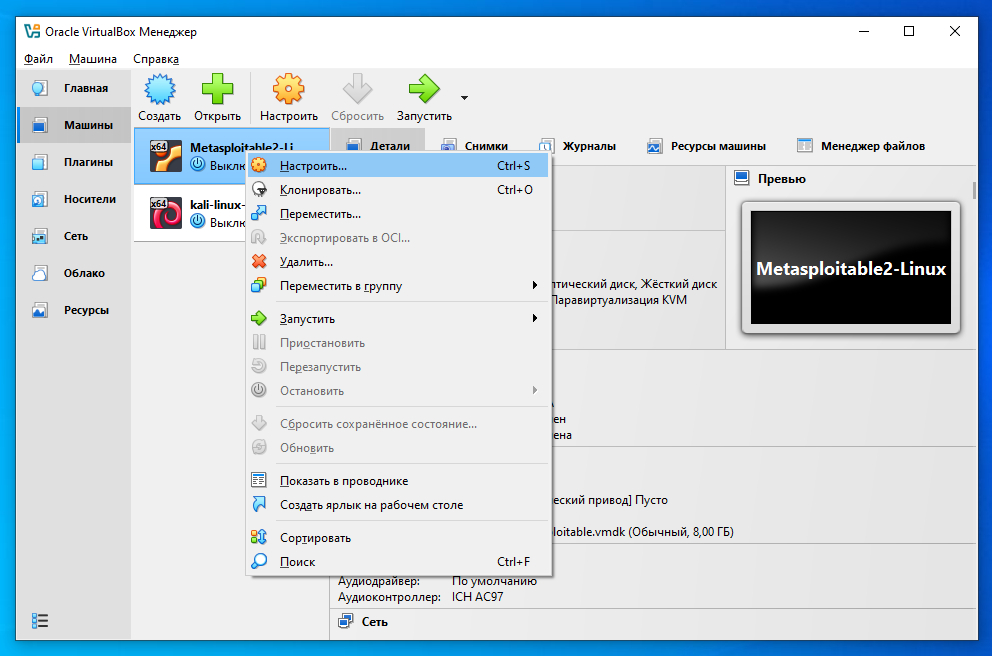
В следующем окне (скриншот ниже) выбираем пункт слева Сеть (это уже настроки сети конкретной машины, не всей сети), выбираем Тип подключения - Сеть NAT и выбираем имя сети MyPentestNetwork и нажимаем кнопку ОК.
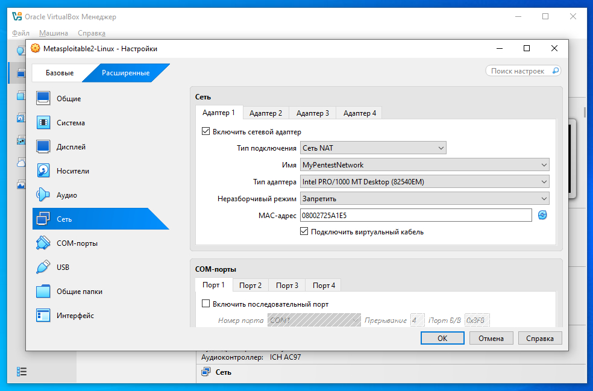
Далее выбираем ВМ Kali, заходим в настроки ВМ, далее Сеть и делаем те же настроки что и для Metasploitable 2 до этого.
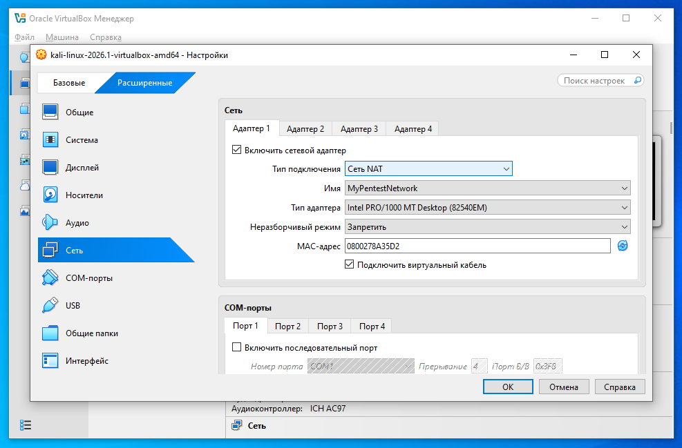
Теперь протестируем соединение между нашими ВМ. Для этого, в главном окне VirtualBox выбираем ВМ Kali и нажимаем кнопку "Запустить".
После запуска ВМ Kali видим форму входа - стандартные логин/пароль это kali/kali.
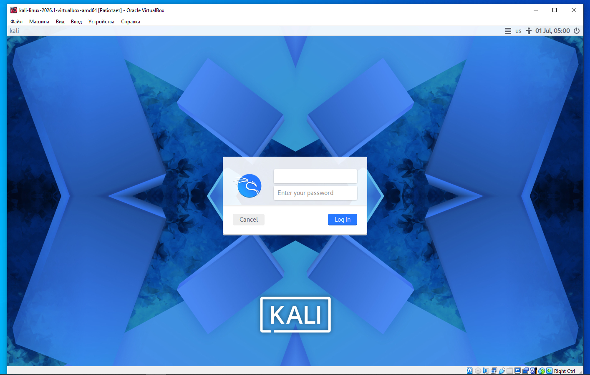
Теперь мы вошли в ВМ Kali Linux:
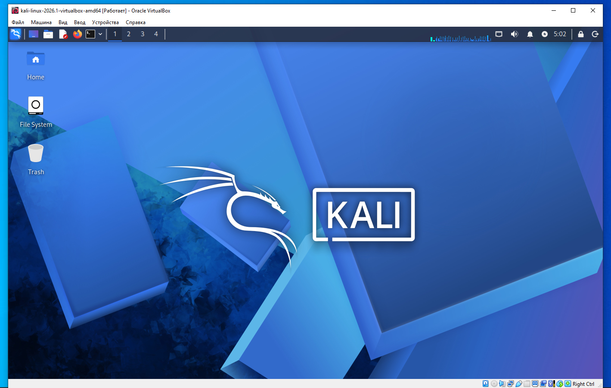
Далее возвращаемся в VirtualBox аналогично запускаем ВМ Metasploitable 2.
Вот так выглядит ВМ Metasploitable 2 после загрузки - запрос логин/пароль. Далее про эту ВМ можно забыть, она остается в запущенном состоянии, но кому интересно логин/пароль по умолчанию для Metasploitable 2 msfadmin/msfadmin.
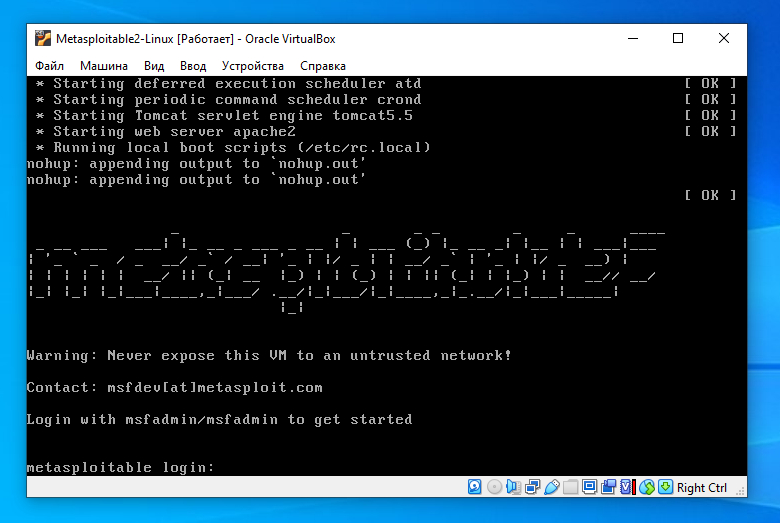
Теперь у нас есть две запущенные виртуальные машины. Необходимо проверить есть ли сетевое подключение между ними. Для этого возвращаемся обратно в ВМ Kali и в терминале даем команду ifconfig, эта команда позволит нам узнать наш IP внутри нашей сети:
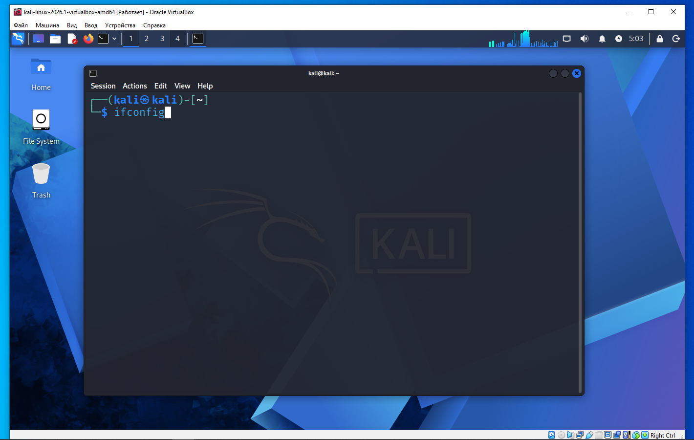
В выводе команды ifconfig видим сетевой адаптер eth0 и я выделил его IP адрес это 10.0.2.3, второй адаптер обозначен как lo это loopback адрес нашей машины 127.0.0.1. Нас интересует eth0 10.0.2.3.
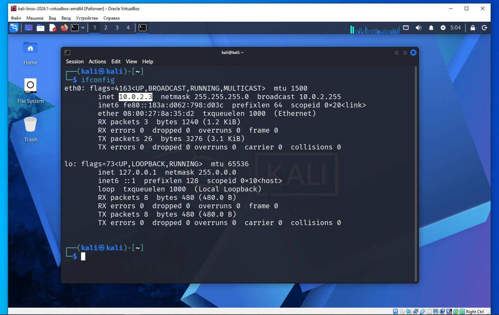
Теперь у нас есть IP адрес нашей машины 10.0.2.3 и мы можем дать команду netdiscover. Команда netdiscover позволяет обнаружить другие компьютеры в сети. В команде /24 обозначает что первые 24 бита (то есть часть 10.0.2) IP адреса это сам адрес, а последние 8 бит IP адреса - это адреса компьютеров (то есть часть в конце команды .0), таким образом команда netdiscover использует этот адрес 10.0.2 для поиска сети и последнюю часть .0 для подстановки номера компьютера в сети (диапазон от 0 до 255). То есть netdiscover для первого шага берет IP 10.0.2.1 и спрашивает этот IP ты жив или нет? Второй шаг IP 10.0.2.2 спрашивает жив или нет? Третий шаг IP 10.0.2.3 спрашивает жив или нет? И т.д. до 255 компьютера в сети. Если компьютер по IP присутствует в сети - он отвечает да я есть и этот компьютер мы видим в результатах вывода команды.
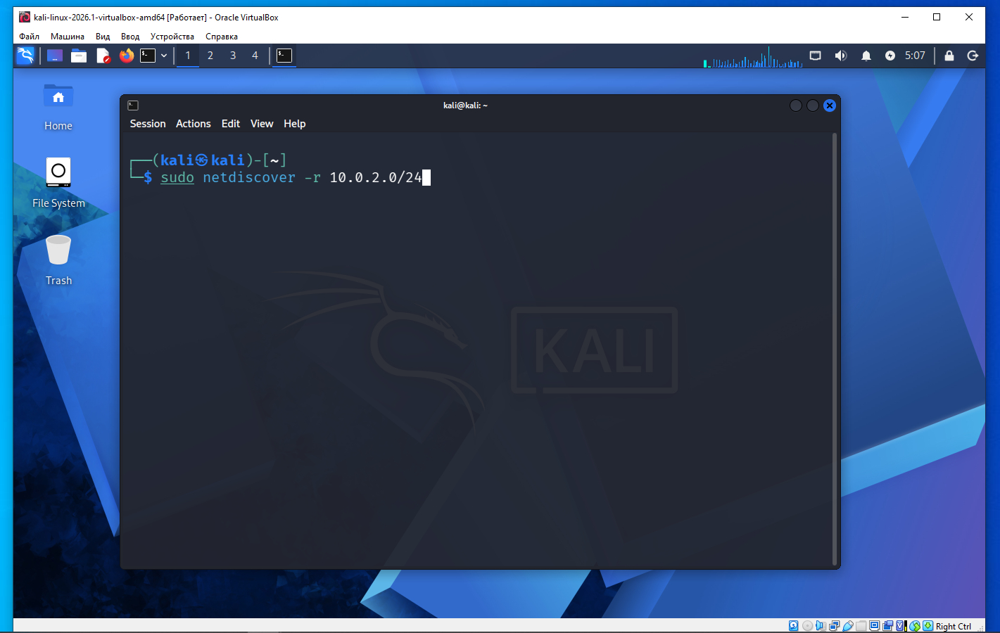
Вывод команды netdiscover показан ниже. Будет такой момент- что бы выйти из netdiscover после отображения результата и вернуться в командную строку следует нажать клавишу q. Здесь на скриншоте IP 10.0.2.2 это виртуальный роутер VirtualBox так как у нас Сеть NAT в настройках. И IP 10.0.2.4 это наш компьютер с Metasploitable 2. Других компьютеров в сети у нас нет. Что такое виртуальный роутер по адресу 10.0.2.2? К примеру у вас дома есть физический wi-fi роутер - он дверь вашей сети, вы подключаетесь к нему по wi-fi или кабелю. Те же самые функции выполняет виртуальный роутер в VirtualBox для нашей сети MyPentestNetwork внутри VirtualBox.
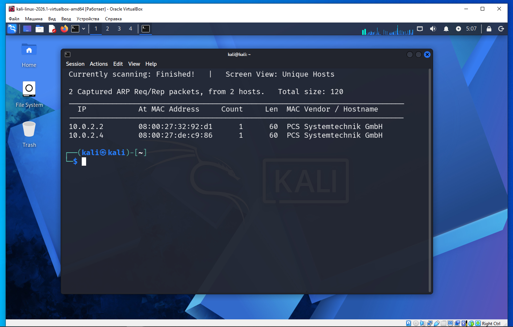
Может показаться старнным что в выводе команды MAC Vendor (то есть владалец MAC) указано PCS Systemtechnik GmbH а сами эти адреса используются Oracle VirtualBox. D выводе команды PCS Systemtechnik GmbH - это название компании из Гамбурга за которой организация IEEE зарегистрировала эти MAC адреса. Организация IEEE выдает диапазоны MAC адресов другим организациям и компаниям. Но, теперь этот MAC использует Oracle в VirtualBox поскольку этот диапазон MAC адресов был передан из PCS Systemtechnik GmbH в Oracle. PCS Systemtechnik выдала Oracle лицензию на использование этого диапазона. Сканеры сети до сих пор используют базы в которых записано PCS Systemtechnik GmbH компания которая владеет этим MAC. То есть при выдаче диапазона MAC один раз может быть записано имя владельца PCS Systemtechnik, потом уже переназначить нельзя, хотя фактически этот диапазон MAC уже использует Oracle VirtualBox.
Теперь мы подошли к тому, что бы проверить- есть ли соединение между нашей машиной Kali и Metasploitable 2.
Для проверки связи необходимо дать команду ping. Как видим пакеты приходят, то есть связь есть между нашими машинами. Для прекращения работы команды ping следует нажать сочетание клавишь Ctrl+C.
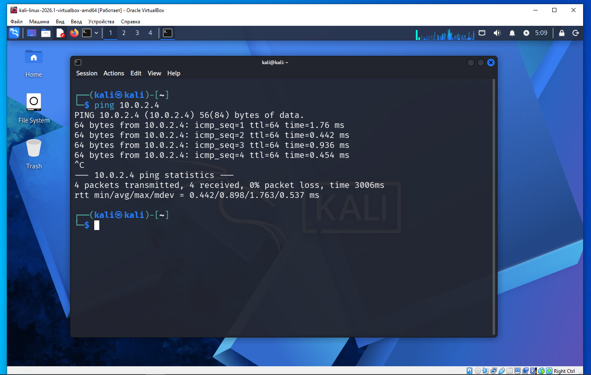
Наша сеть внутри VirtualBox работает.
Продолжение статьи ЗДЕСЬ